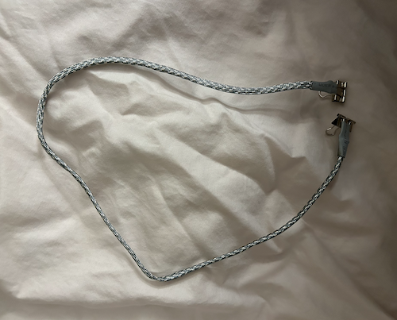

This assignment was completed on September 24, 2023
My goal for this weekly assignment was to create a connector that is inspired by Irene Posch's designs in order to challenge and test my creativity when it comes to conductive materials. My hope was to create a connection equally functional as the quilt clip connectors.
connector creation
The materials I used in order to complete this assignment were paracord, insulated wire, conductive tape, shrink wrap and metal binder clips.
In order to complete this, I threaded the insulated wire through a foot of paracord, and then stripped the ends of the wire. Then, I attached the wire to the binder clip by wrapping it and securing with a bit of conductive tape. After, I used shrink wrap to finally secure the whole end and then repeated again on the other side. Lastly, I checked to make sure everything was working and fuctional using my multimeter to check conductivity from one end to another.
reflection
I am pretty proud of how this connector turned out. I think that using a metal binder clip is a great way to skip a large portion of the conductive tape necessity as well as a tight fastener. It will hold a wire tightly and will not slip out, which also increases functionality. Next time, I would like to make a prettier, more decorative connector, but functionality was my main priority in this first go.